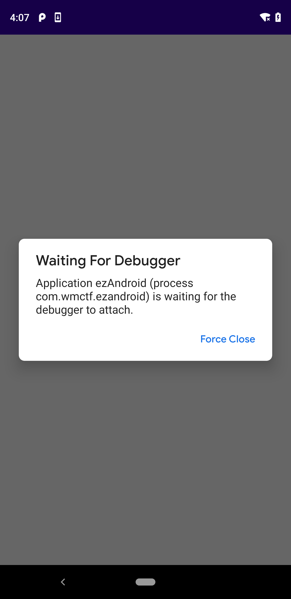

IDA调试安卓SO文件
概述
安卓逆向中会需要分析Native层的SO文件
由于SO文件是动态链接库文件,不能独立执行,必须依赖相关进程进行调试
所以只能使用IDA附加调试(attach)
附加调试有两种情况
Native函数是发生一些事件后调用
例如输入用户名和密码,点击按钮进行登录
这种情况正常运行程序,一般附加即可
Native函数是App启动时立刻调用
例如.init_array中的函数和JNI_OnLoad函数
这种情况需要以debug模式启动app再进行附加
基本准备
无论是哪种情况,都要做一些准备
- 设置手机ro.debuggable属性为1
- 将android_server推送至手机
- 启动android_server
- adb设置端口转发
- 设置process options
设置ro.debuggable
可以通过该命令查看
1 | adb shell getprop ro.debuggable |
一般手机默认为0(即不允许调试)
手机经过root后,使用Magisk安装MagiskHidePropsConf模块操作
详细操作参考:
推送android_server
在ida的dbgsrv文件夹下,找到和手机架构匹配的server
真机一般是arm64架构,直接选择android_server64即可
模拟器一般是x86/x64架构

在该文件夹中打开cmd
输入命令将文件推送至手机
1 | adb push android_server64 /data/local/tmp |
执行andorid-server
输入命令
1 | adb shell |
执行后如下,cmd窗口不要关闭

端口转发
再打开一个cmd窗口
输入
1 | adb forward tcp:23946 tcp:23946 |

设置Process options

将hostname设置为127.0.0.1(或localhost)

一般附加
运行android_server后,手机上正常启动app
建议到Debugger>Debugger options中勾选上这三个选项

用ida打开so文件,提前在关键函数处下断点,再点击Debugger>Attach to process

之后选择附加程序,可以按ctrl+f搜索app包名进行查找

刚附加时,此时app会暂停执行,f9继续运行

输入用户名和密码,点击登录按钮后成功在关键函数断点处断下,之后就可以愉快的调试了

Debug模式启动app附加
启动android_server后,使用命令以debug模式启动app
1 | adb shell am start -D -n packagename./MainActivity |
这里的MainActivity是app的入口类,一般默认是这个,也可能是其他名称

手机上显示
然后和一般附加一样,先打开so文件,下好断点,选择attach to process附加app进程即可
附加成功后需要打开ddms,可以发现被调试进程显示红色小虫子,右边的8603/8700则是端口号,记录该端口号

tips:ddms在Android Sdk tools文件夹内,现在的名称是monitor
双击monitor.bat即可打开

然后输入命令
1 | jdb -connect com.sun.jdi.SocketAttach:hostname=127.0.0.1,port=8700 #port默认为8700 可以根据实际情况更改 |
成功执行后如下,并且ddms的红色小虫子会变成绿色

然后按几次f9,等待程序加载一些so文件,之后就可以断到JNI_OnLoad或者.init_array等app启动时执行的函数处了

其他
不打开so文件,可以直接选择debugger>attach进行附加调试
附加成功后点击右侧模块窗口搜索模块名

搜索到模块后点击模块可以看到模块的函数列表,点击之后可以查看函数